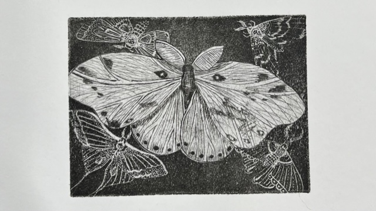

In the fall semester I will be starting my third year here at the University of West Florida. My major is Graphic Design. I have learned so much here and a bunch of fun stuff this summer semester. I took an Intro to Digital Studio class (which this website is an assignment for) and a 3-d Design class. Above you can find my projects for both classes. If you would like to check out some of my other art work you can follow my instagram @kkel.art or @highimkel for my personal account!
